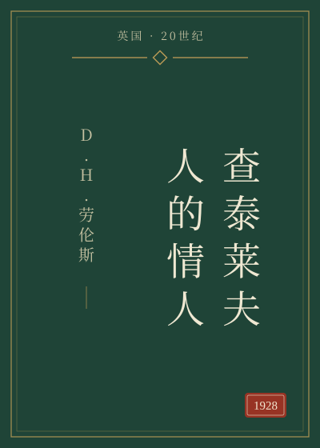
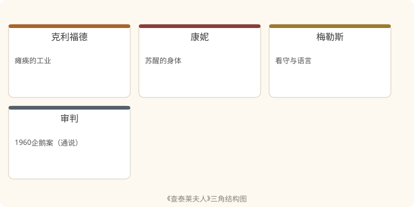

查泰莱夫人的情人
一、基本信息
| 作者 | 劳伦斯 |
|---|---|
| 成书/出版 | 1928年（作者页 B125 口径：查泰莱夫人的情人（1928）） D.H. Lawrence — Encyclopaedia Britannica（百科全书） |
| 国别/地区 | 英国 |
| 时代 | 现当代 · 20世纪 |
| 体裁 | 长篇小说 |
| 语言 | 英语 |

《查泰莱夫人》三角结构图（主题·结构图）
二、创作背景
作者页（B125）：劳伦斯 major_works 载'虹（1915）、恋爱中的女人（1920）、查泰莱夫人的情人（1928）'（B125 作者页定位，详见 erzisonai 条核对）。
出版史（通说待核）：私印版本（1928佛罗伦萨）与1960年'企鹅审判'——英国出版自由史的标志案件。
三、内容脉络
康妮与矿工出身的猎场看守梅勒斯——阶级与身体的重逢（通说待核）。
'废墟上的肉体温存'：对机械文明的抵抗（通说待核）。
四、主要人物表
| 人物 | 身份 | 说明 |
|---|---|---|
| 康妮（查泰莱夫人） | 贵族妻子 | （通说待核） |
| 梅勒斯 | 猎场看守 | （通说待核） |
| 克利福德爵士 | 丈夫 | 瘫痪的矿主（通说待核） |
五、主题与艺术特点
- 身体与阶级（通说）。
- 工业文明对生命的残害（通说待核）。
- '淫秽'审判与出版自由（通说待核）。
六、影响与评论
- 作者页：劳伦斯后期代表作（B125 作者页口径）。
D.H. Lawrence — Encyclopaedia Britannica（百科全书） - 1960年企鹅版无罪判决——英国出版史里程碑（通说待核）。
D.H. Lawrence — Encyclopaedia Britannica（百科全书）
七、阅读建议
难点
- 性描写的文学语境。
- 劳伦斯的语言节奏。
- 《查泰莱夫人的情人》（人民文学出版社饶述一译本，通说待核）。
- 英文全本（剑桥版）。
先《儿子与情人》《虹》后本作。
八、待核实
- 1928年佛罗伦萨私印（Orioli说）核对。
- 饶述一译本（1936年说）待核。
- 1960年企鹅审判（R v Penguin Books）细节待核。
本页主要来源
劳伦斯的其他收录作品：儿子与情人